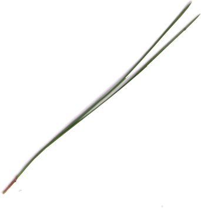

화면의 여섯 잎을 ‘전체적인 모양이 길쭉한가?’로 나눌 때, ‘그렇다’ 무리에 함께 들어가는 것은?
이 표본에서는 소나무와 강아지풀의 잎이 폭이 좁고 깁니다. 잎 끝이 뾰족한지와 전체가 길쭉한지는 다른 기준입니다.
잎의 생김새를 확대해 살펴보고, 정한 기준에 따라 직접 두 무리로 나눠 보세요.

확대 후 사진을 끌거나 방향키로 옮겨 보세요.
잎 카드를 누르면 크게 볼 수 있습니다. 사진 속 크기는 실제 잎의 크기와 다릅니다.
실물 잎은 필요한 만큼만 채집하고, 모르는 식물은 맛보거나 함부로 만지지 않습니다.
이 표본에서는 소나무와 강아지풀의 잎이 폭이 좁고 깁니다. 잎 끝이 뾰족한지와 전체가 길쭉한지는 다른 기준입니다.
벚나무 잎은 폭이 넓지만 끝은 뾰족합니다. 한 가지 특징으로 나눈 무리가 다른 기준에서도 그대로 유지되는 것은 아닙니다.
단풍나무는 한 잎몸이 여러 갈래로 갈라져 있습니다. 토끼풀은 작은 잎 세 장이 달린 모습이므로 같은 갈라짐으로 분류하지 않습니다.
벚나무는 끝은 뾰족하지만 잎 전체는 폭이 넓습니다. 벚나무를 옮기면 ‘그렇다’ 2장, ‘아니다’ 4장이 됩니다. 두 무리의 수가 같을 필요는 없습니다.